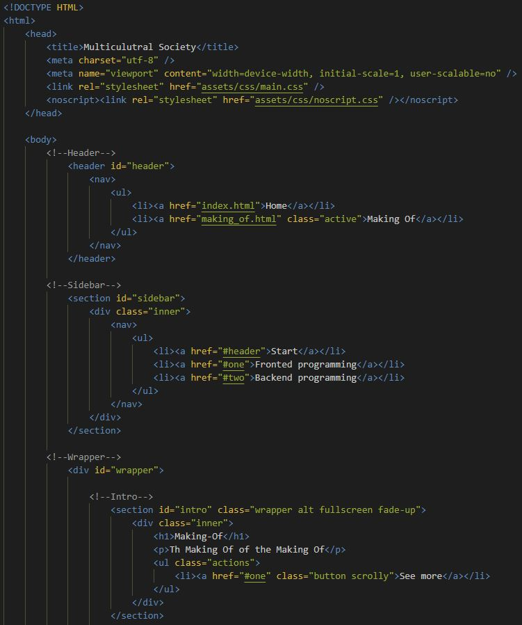
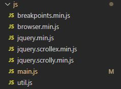
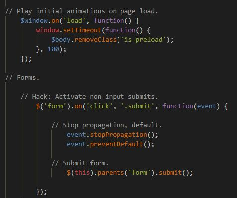

The website's foreground programming is fully based on HTML5, CSS and SASS. Foreground programming includes the positioning of images, icons and menus but also the design of buttons, headlines and textes.
The website's background is based on javascript. This includes the animations and the support for mobile devices.
 